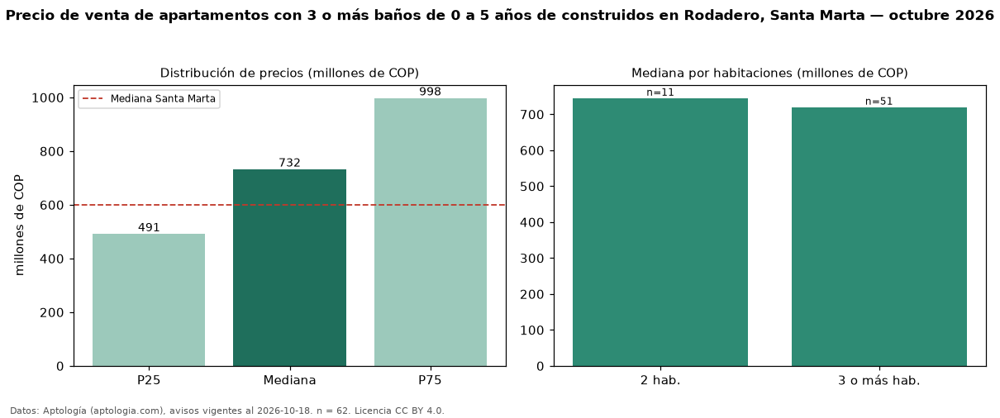

Precio de venta de apartamentos con 3 o más baños de 0 a 5 años de construidos en Rodadero, Santa Marta — octubre 2026
COP 732 millones es el precio mediano de apartamentos con 3 o más baños de 0 a 5 años de construidos en venta en Rodadero, Santa Marta (n = 62 avisos). Prácticamente coincide con la mediana de los apartamentos con 3 o más baños en venta de Rodadero (COP 750 millones, n = 113); este segmento reúne el 55 % de esos avisos. Por metro cuadrado, la mediana es COP 5,50 millones/m² (n = 61), 0 % por debajo de los apartamentos con 3 o más baños en venta de Rodadero (COP 5,52 millones/m²). El área mediana anunciada es 135 m². El segmento con más oferta es el de 3 o más habitaciones (51 avisos, mediana COP 720 millones); pasar de 2 habitaciones a 3 o más habitaciones cambia la mediana −3 %. La administración mediana declarada es COP 667.000 al mes (n = 54). La mitad central de los avisos va de COP 491 millones a COP 998 millones (razón 2,0), una dispersión alta. El estrato más frecuente es 6 (82 % de los avisos con estrato). Datos: Aptología (aptologia.com), CC BY 4.0 — https://www.aptologia.com/venta/santa-marta/rodadero. Archivos: PDF, CSV con las cifras y gráfica PNG.

| Avisos únicos | 62 |
|---|---|
| Percentil 25 | COP 491.250.000 |
| Mediana | COP 732.500.000 |
| Percentil 75 | COP 997.500.000 |
| Mediana por m² | COP 5.500.000 |
Fuente: avisos vigentes de portales inmobiliarios recopilados por Aptología, deduplicados (mínimo 30 avisos únicos por celda). Precios pedidos, no cerrados. Fecha: 2026-10-18.